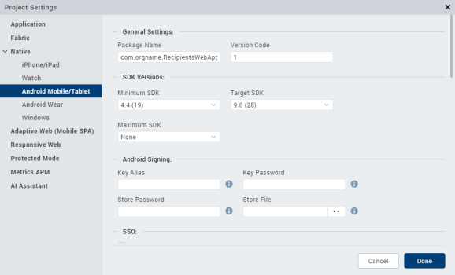

Set Native App Properties
Native app properties are divided into two categories: those that are common to all platforms, and those that are platform-specific. These properties range from the logo image your app displays to the types of screens and SDKs the app supports, and how certificates are handled.
From VoltMX Iris V8 SP4, you can also enable certain Android features by manually adding the corresponding properties to the androidbuild.properties file.
To set Native app properties, follow these steps:
- In VoltMX Iris, from the Project Explorer, click Project Settings. The Project Settings window appears.
- Click the Native tab. A list of sub-tabs appears.
- Click the General sub-tab, and set the following properties:
-
Enter a Name for the Native channel version of the application. If no name is specified, the Application ID specified under Application Properties is used.
Note: For iOS applications, if the Name of the app has non-English characters, you must add the
unicodeAppNameFlag: truekey in theinfoplist_configuration.jsonfile. -
From the Application Logo, you must browse and select an image file for the logo.
Important:* The logo you specify here will be renamed to
icon.pngwhile building the application on the iPhone platform.- For Desktop, the icon dimension must be in multiples of 8. Minimum pixels can be 8 x 8 and maximum pixels can be 248 x 248.
-
-
Click the Android sub-tab, and set the following properties:

-
Package Name: Package name is a unique name to identify a specific application. It is generally in the format
domain.company.application.Note: The name you specify for Android Package must contain at least two segments.
A segment is a valid Java package name. The following are a few examples of valid Android Package names:
com.hcl.<ApplicationName>com.voltmx.<ApplicationName>com.voltmxsolutions.<ApplicationName>com.voltmx.<ApplicationName>_Android.
- Version Code. This is an internal version number. This number is used to determine whether the application is a recent version. This version number is not shown to users. The value must be an integer. You can increase each version by one to indicate a newer version.
- In the SDK Versions section:
-
Select the Minimum SDK Version that needs to be supported for the application.
Note: The application must be built with a minimum version matching the device SDK version. For example, a device with 5.0 version of SDK cannot run an application built on 4.0.
-
Select the Target SDK Version that needs to be supported for the application.
Note: The Target SDK Version must be greater than or equal to the Minimum SDK Version.
-
Select the Maximum SDK Version that needs to be supported for the application.
-
- Signing - Use this option to sign the android binary automatically during the build process.
- Key Alias- Use this option to enter the alias of the key.
- Key Password - Use this option to enter the password for the key.
- Store File - Use this option to locate and configure the store file.
- Store Password - Use this option to enter the password for the store.
- Android Architectures Support
- Support x86 Devices - Select this option to support any Android-x86 devices.
-
Support 32-bit Devices - Select this option to build an Android APK with 32-bit support. Once you select this option, only 32-bit
.sofiles (armeabi-v7a and x86) are packed and the application leaves out 64-bit.sofiles (arm64-v8a and x86_64). If you do not select the Support 32-bit devices option, 64-bit libraries /.sofiles (arm64-v8a and x86_64) are packed by default.Note: From VoltMX Iris V9 onwards, 64-bit APK’s are generated, by default.
Note: From August 1st 2019 onwards, all apps published on Google Play must support 64-bit architectures.
To support both 64-bit and 32-bit architectures in Google Play store, you must make sure that you perform the following actions:
- Build the 32-bit and 64-bit APKs with two different version codes, which are separated by at least 1000.
For example,64-bit version code = 32-bit version code + 1000. - Ensure that the third-party libraries (
AARfiles) contain the respective.sofiles in all supported architectures: lib/armeabi-v7a, lib/arm64-v8a, and lib/x86 lib/x86_64 for 32-bit and 64-bit architectures, respectively.
Note: To enable your application to be built with both 32-bit and 64-bit native libraries, refer to Support for 32-bit and 64-bit Architectures in a Single APK.
- Build the 32-bit and 64-bit APKs with two different version codes, which are separated by at least 1000.
- In the Supported Screens section:
- Any Density - If this option is enabled, the application can accommodate any screen density for a resource. You do not have to use this option if your app directly manipulates bitmaps. Generally this option must always be set to true.
- Small Screens - If this option is enabled, the application supports smaller screen form-factors. A small screen is one with a smaller aspect ratio than the normal (traditional HVGA) screen. An application that does not support small screens is not available for small screen devices from external services (such as Google Play).
- Normal Screens - If this option is enabled, the application supports normal screen form-factors. Traditionally, this is an HVGA medium density screen, but WQVGA low density and WVGA high density are also considered to be normal.
-
Large Screens - If this option is enabled, the application supports larger screen form-factors. A large screen is defined as a screen that is significantly larger than a normal handset screen, and might require some special care on the application’s part to make good use of it. The application may rely on resizing by the system to fill the screen.
If this option is unchecked, it enables screen compatibility mode.
- Extra Large Screens - If this option is enabled, the application supports extra large screen form-factors. An extra large screen is defined as a screen that is significantly larger than a large screen, for example, tablet (or something larger) and may require special care on the application’s part to make good use of it. The application may rely on resizing by the system to fill the screen. If the option is unchecked, this will generally enable screen compatibility mode.
- Resizable - If this option is enabled, the application is resizable for different screen sizes. This property is deprecated by Android SDK and is supported only for customers on the 2.6 plug-in. This property enables you to run an application in the compatibility mode. For more information, see Support Screen Elements for the Android App Manifest.
- In the Install Location section:
-
Use Location Preference. This property defines the location where the application is deployed.
- Auto - Indicates that the application is deployed on the device and can be moved to the SD Card later if required.
- Prefer SD Card - Implies that the application is deployed on the storage card and cannot later be moved to the device memory.
Note: This works only if the Minimum SDK is 2.3 or above.
-
- In the Miscellaneous section:
- Enable Local Notifications - Select this option to enable notifications scheduled by an app and delivered on the same device. They are suited for the apps with time-based behaviors, such as calendar events.
- Enable Payment API - Selecting this option enables online transactions in applications.
- Use Google Play Location Services - Select this option to enable location service based on the Google Play Location Service API.
-
Support SQL DB Encryption (FIPS)- In Android, if you select this option, VoltMX Iris automatically bundles Federal Information Processing Standard (FIPS) compliant SQL Cipher third-party library with the application. After the application is complied with this option selected, the APIs in Web SQL support database encryption. For more info, see API Reference Guide > Offline Data Access APIs > Web SQL APIs.
Note: FIPS does not provide the mechanism to build the x86_64 architecture for Android. From V8 SP4 onwards, for the x86_64 architecture, VoltMX Iris automatically bundles libraries that are non-compliant to FIPS for the following items:
SQLCipher
OpenSSL - Bundle OpenSSL Library- In Android, if you select Bundle OpenSSL Library option, VoltMX Iris automatically bundles a third-party OpenSSL native library along with the application. The following APIs use this OpenSSL library to support additional hashing algorithms than the algorithms supported by Native Android SDK (Java Implementation). For information on supported algorithms in these APIs, see API Reference Guide > Cryptography APIs.
Note: FIPS does not provide the mechanism to build the x86_64 architecture for Android. From V8 SP4 onwards, for the x86_64 architecture, VoltMX Iris automatically bundles libraries that are non-compliant to FIPS for the following items:
SQLCipher
OpenSSL - Disable Application Screenshot - This option specifies whether the user can take a screenshot of your application.
- Enable File Upload - Enables you to upload files to a remote sever by using the HttpRequest API.
- ActionBar - Enabled only if target SDK is 3.0 or above. Use this option to enable Action Bar feature.
- Network Trust Config - Using this option, you can control the certificates that are used.
- None - No certificates are allowed. This means that if the certificate is present in the Android Trust store, it will allow the N/W call to proceed; otherwise, it throws an exception. With this option, servers having non-trusted or self-signed certificates are not accessible via the app on the device.
- All - All types of certificates are allowed regardless of whether they are bundled. This option is useful during the development phase of an app, but not for publication. With this option, all servers are accessible regardless of the kind of certificate they hold (i.e. self-signed, non-trusted, trusted). Due to the lack of security inherent in this option, the Google Play store rejects such apps when they are submitted for publication.
- Allow Bundled - Only the certificates that are bundled along with the app are allowed. With this option, the app can communicate only with servers that have the certificate(s) that are bundled with the app.
-
To bundle the certificate in the application, copy the certificate under the following folder: For mobile,
<workspace>/<app>/resources/mobile/native/android/assets/certs. For tablet,<workspace>/<app>/resources/tablet/native/androidtab/assets/certsNote: If an assets folder does not exist, create an assets folder under respective locations as indicated above.
Create certs directory under the assets folder and add all the certificates into this folder.Important: Allow Bundled option will not work in Android 2.3.x OS versions due to certificate chaining issue (causes certificate exception). This is a known Android native issue. For more information, see Issue 25152 on the Android Open Source Project Issue Tracker. Among other topics, Issue 25152 documents that to make the bundled option work in Android 2.3.x devices, the root CA needs to be omitted from the server end.
-
- Allow Pinned - Only the certificates that are pinned or associated to the host. Pinning makes use of knowledge of the pre-existing relationship between the user and an organization or service to make the security-related decisions better.
- Splash Screen Orientation Mode - When resource folders are created from IDE by Add resource folders option, then directories like drawable-port and drawable-land are created automatically inside the directory
<workspace>/<app>/resources/mobile/native/android.- Portrait - Use this option if splash screen support is required only for portrait mode, and copy it inside drawable-port folder.
- Landscape - Use this option if splash screen support is required only for landscape mode, and copy it inside drawable-land folder.
- Both - Use this option if splash screen support is required for both modes. If splash screen images are different images, then place the image in their respective directories. If you use same image for both modes, then copy the resources under
mobile > native > androidinstead of drawable-port or drawable-land folder.
-
In Push Notification section: * GCM - Select this option to enable Push Notifications for the application. This option copies the libraries required for push notification into the project during build time.
Important: GCM (Google Cloud Messaging) is supported only for Android SDK Versions 2.3 and above.
- Custom GCM Broadcast Receiver (Optional) - If your application requires to override the default GCM broadcast receiver behavior, you can provide your own custom broadcast receiver. To customize the GCM receiver, see Customizing GCM Broadcast Receiver. * FCM Select this option to enable Push Notifications for the application. This option copies the libraries required for push notification into the project during build time.
- Custom FCM Service (Optional) - If your application requires to override the default FCM service, you can provide your own custom FCM service. To customize the FCM service, see Customizing FCM Service.
-
In Manifest Properties section: * Permissions tab: Set the permissions to true or false based on the application requirements. Set the appropriate permissions for Android Manifest file. For more information, see The Android Manifest File.
- To enable permissions, select the permissions from the left pane and click Add >.
-
To disable permissions, select the permissions from the right pane and click < Remove.

Important: Add the
WRITE_EXTERNAL_STORAGEsetting if you need to save images in an external storage like SD Card.
* **Tags** tab: You can add tags to the Android manifest file directly from VoltMX Iris by specifying tag entries and attributes on the Tags tab. You can specify child tag entries and attributes for <manifest> and <application> tags, and the Main Launcher <activity> tag. For more information on the tags you can add with the manifest or application tags, see [http://developer.android.com/guide/topics/manifest/manifest-intro.html](http://developer.android.com/guide/topics/manifest/manifest-intro.html).  For more information on the tags you can add, see [http://developer.android.com/guide/topics/manifest/manifest-intro.html](http://developer.android.com/guide/topics/manifest/manifest-intro.html). * **Gradle Entries** tab: You can use the Gradle Entries tab to import additional gradle packages, apply external plugins, or specify build-related configuration information, build dependencies, or the location of any external repositories or modules used by your Android application.  You can specify build.gradle entries as a prefix or suffix entries: * Prefix entries are added just below any existing import statements in the build.gradle build script file. Use prefix entries to import additional gradle packages, or to specify external plugins to use in the build. * Suffix entries are appended to the end of the generated build.gradle file. Use suffix entries to customize build logic; for example, to add compilation dependencies such as Google and Android support repositories, local library modules, or local and remote repository paths. For more information, see [Organizing Build Logic](https://docs.gradle.org/current/userguide/organizing_build_logic.html). Use the gradle.properties entry to configure project-wide Gradle settings, such as the Gradle daemon's maximum heap size or proxy settings. For more information, see [The Build Environment](https://docs.gradle.org/current/userguide/build_environment.html). Use the settings.gradle entry to specify external modules (Gradle-based third-party Android libraries) to include when building your application. For more information, see [Configure Your Build](https://developer.android.com/studio/build/index.html). -
- Under iPhone/iPad/Watch tab, set the following properties:

- Bundle Identifier - Provide an unique name that identifies the application bundle. This is usually in three parts and follows the convention of
com.voltmx.<appname>. - Bundle Version - a number that identifies the version of the application bundle.
- Apply Glossy Effect to App Icon - specifies if the glossy effect must be applied to the app icon. The default value is false.
- Deeplink URL Scheme: specifies a url to which the application will deep-link to. If the application name is southwest then the url scheme that the other applications can use to launch the southwest application is southwest://. For more information about deep-linking, see Appendix E: the App Service Event.
-
Platform Settings: Using the Platform Settings Area, you can set certain default properties for an application for iPhone.

- Generic exception alert: When true, generic exception alerts like “system error” are fired and when false detailed exception message is shown as alert. Best practice is to be use true for release mode and false for debug mode.
- Exception alert: When true, system throughs the exception alerts otherwise (with false) app would crash in case of exception instead of alert. Best practice is to be use true for release mode and true for debug mode.
- Globals monitoring: If set to true, the information like number of variables of the given type used in the app. Possible types are Strings, tables, numbers, closures, forms, other objects is printed in the logs.
- Paste Board Type: It will allow the user to copy paste content from the app to external writable area like message etc. system level - it will allow to copy paste into other applications. Applevelpersistent - it will allow to copy paste within the app and the messages are persistent will be available across the app restarts. Applevelnonpersistent - it will allow to copy paste within the app and the messages are Not persistent and will not be available across the app restarts. Nopasteboard - it will not allow paste anywhere.
-
Allow Self Signed Certificate: By default it is false, if true, it allows self signed certificate for development.
Note: Self Signed Certificate option is only applicable if you use Network APIs in your application.
- Input Accessory View Type: The input accessory view type for widgets like text box, calendar, grouped widgets etc where you have next previous cancel buttons. This can be overridden by form level Input Accessory View Type.
- Anti Aliased Drawing: If set to true, allows smoother widgets and layout without any jagged edges.
- Camera Settings: Allows to set images to the icons which appear on the camera such as cancel icon, settings icon, tapanywhere.
- Backward_compatibility_mode: By default it is false, if true it will allow the application feature to behave as it would have behaved on earlier version (if there is any behavioral change in the latest version)
-
-
Push Certificate - Choose the required option from the list to either enable push notifications in different types of environments. You can also disable receiving push notifications for any environment. This field contains the following options:
- development: Select this option to receive push notifications when in the developer environment.
- production: Select this option to receive push notifications when in the production environment.
- None: Select this option to disable push notifications in any environment.
Note: This feature is available from VoltMX Iris V8 SP4 FP19 onwards, and is available in both VoltMX Iris Classic and VoltMX Iris.
- Application Launch Mode for iPad - specifies the default mode of launching the application on iPad. Portrait is the default value.
- Supported Orientations for iPad - specifies the supported orientations for the iPad. This depends on the launch mode. The different orientations for a form and at application level are listed at
Add Android Properties to androidbuild.properties File
From V8 SP4 onwards, you can enable or disable certain Android features by adding the corresponding properties to the androidbuild.properties file. You must first create the androidbuild.properties file in your VoltMX Iris project workspace (workspaceLocation\\project) as shown in the image.

Note: If the same property is passed from VoltMX Iris in future plugins, the VoltMX Iris property takes precedence.
Enable Android Features
You can enable the following Android features by adding these properties in the androidbuild.properties file:
Public Key Pinning
You can enable the Public Key Pinning feature by specifying the following property in the androidbuild.properties file as shown.
This feature is enabled only if the networktrustconfig property is set as Allow Pinned in the androidbuild.properties file.
networktrustconfig = Allow Pinned APK Tamper Protection
The APK Tamper Protection feature helps you to verify if an APK has been tampered with (modified from its original version). If a tamper is detected, the application safely exits during the bootup process. This is an optional feature that is supported only in Release and Protected modes. APK Tamper Protection is available from V8 SP4 onwards. From V8 SP4 Fixpack 20 onwards, support for Google Play App Signing has been added. Google Play App Signing is a mandatory signup for Android App Bundle support.
This feature is enabled only if the addAPKTamperProtection property is set as true in the androidbuild.properties file.
addAPKTamperProtection = trueFor this feature to work, you must provide either of the information as follows:
- Add KeyStore entries from the Signing section in Iris: Project Settings > Native > Android > Mobile/Tablet > Signing.
- Alternatively, you can add the developerSigningKeyHash key in the androidbuild.properties file.
An example of a typical developerSigningKeyHash is shown here.
developerSigningKeyHash:2otpMeAC68KCm7Q+F48tzTFtzmU=The developerSigningKeyHash key helps you to utilize the APK Tamper Protection feature in the following scenarios:
- Google Play App Signing, where the key used to sign the APK that is being uploaded is different from the final APK delivered to customers from Google Play. For more information on how the Google Play App Signing process works, click here.
- CI/Cloud build environment, without actually revealing the original developer signing KeyStore information.
Generate the developerSigningKeyHash Key for Google Play App Signing
- When customers enroll into the Google Play App Signing process , the SHA-256 or SHA-1 hash of the public key can be obtained. They can obtain the hash by signing in to Google Play Store Console, navigating to Release Management > App Signing, and then copying the SHA-256/SHA-1 certificate fingerprint.
- Go to
<WorkSpace>\temp\<AppID>\build\luaandroid\extres. - Locate and open the
PrintApkSignatureHash.jarfile. - Run the following command to generate the developerSigningKeyHash:
java -jar PrintApkSignatureHash.jar --fingerprint "<Hash-Algorithm>: <certificate fingerprint in Hexadecimal>"
Here,Hash-Algorithmcan either beSHA-1orSHA-256.
For example:
java - jar PrintApkSignatureHash.jar--fingerprint“ SHA256: EB: 71: 4E: 90: 3D: 2A: 7E: 14: 4B: D1: 73: 47: 3A: EA: 3D: 06: C5: F2: 69: B5: DC: BB: 28: 44: A0: 8D: AC: 17: E7: F2: 7F: 8F”
- Here is a sample output that is generated
developerSigningKeyHash : xxxxxxxxxxxxxxxxxx
- Copy and paste the output value in the
androidbuild.propertiesfile.
Important Points
- If you specify KeyStore entries through VoltMX Iris, the KeyStore entries will take precedence over the developerSigningKeyHash key until VoltMX Iris V8 SP4 Fixpack 19.
- From VoltMX Iris V8 SP4 Fixpack 20 onwards, if you specify Iris KeyStore entries and developerSigningKeyHash, both items are respected simultaneously and the app is launched if any one of these items matches. This enhancement helps you to test the APK locally before uploading it to Google Play.
- If you do not want to upload the Upload Signing key to the CI cloud, use the
uploadSigningKeyHashproperty in the androidbuild.properties file as an alternative to specifying KeyStore entries. - You must provide either the KeyStore or uploadSigningKeyHash to test Google Play App Signing locally for the enrolled APK, which is tamper-protected. If you do not provide any of those values, the test APK that is generated will be signed by the debug key and the APK will not boot as the hash validation process fails at run time.
Generate the developerSigningKeyHash Key by using the KeyStore File
To manually sign the application by using your own keystore file, follow these steps:
- Go to
<WorkSpace>\temp\<AppID>\build\luaandroid\extres. - Locate and open the
PrintApkSignatureHash.jarfile. -
Run either of the following commands to generate the developerSigningKeyHash:
- For apps built in VoltMX Iris V8 SP4 Fixpack 19 or earlier, use the following command. This command generates the hash with SHA-1 algorithm.
java -jar PrintApkSignatureHash.jar keyStorePath keyStorePassword keyAlias - For apps built in VoltMX Iris V8 SP4 Fixpack 20 or later, use the following command. This command generates the hash with either SHA-1 or SHA-256 algorithm, depending on the
-- algorithminput parameter.
java -jar PrintApkSignatureHash.jar –-storepath keyStorePath –-storepass keyStorePassword –-alias keyAlias --algorithm hash-logo
Here, the items are as follows:
- keyStorePath: Path to your actual developer signing key, which is used to upload your app’s APK to the Google Play Store.
- keyStorePassword: Password of your developer KeyStore.
- keyAlias: Signing key alias of your developer KeyStore.
-
hash-algo: Hashing algorithm that is used to generate the signing key hash. It can either be
SHA-1orSHA-256.Note: If the hash is generated with SHA-256 algorithm, the hash will not work for apps built in VoltMX Iris V8 SP4 Fixpack 19 or earlier. However, if the hash is generated with SHA-1 or SHA-256 algorithm, the hash will work for apps built in VoltMX Iris V8 SP4 Fixpack 20 or later.
- For apps built in VoltMX Iris V8 SP4 Fixpack 19 or earlier, use the following command. This command generates the hash with SHA-1 algorithm.
-
Here is a sample output that is generated.
developerSigningKeyHash : xxxxxxxxxxxxxxxxxx
Note: If you are generating the hash of the upload signing key to support Google Play App Signing, use
uploadSigningKeyHashas the key instead ofdeveloperSigningKeyHash. - Copy and paste the output value in the
androidbuild.propertiesfile.
Support for 32-bit and 64-bit Architectures in a Single APK
From V9 onwards, when you enable the support64bit property in the androidbuild.properties file and select the Support 32-bit Devices check box from Project Settings > Native > Android, the VoltMX Iris Android build generates a Fat application. This Fat application supports all architectures: armeabi-v7a, x86, arm64-v8a, and x86_64.
support64bit = trueNote: VoltMX Iris recommends that you use a
Fatbinary for testing purposes only, and VoltMX does not recommend you to upload aFatbinary to Google Play. Use either the Split APK feature or the Android App Bundle feature to reduce the size of the binary that is downloaded to customers’ devices.
Split APKs based on Supported Architecture
Bundling all architectures into a single fat APK increases the APK size of the app that is delivered to customers. This APK Splitting feature, which has been introduced from V8 SP4 Fixpack 12 GA onwards, helps you to decrease the APK size that is downloaded based on the target platform architecture. For more information on the splitting of APKs, click here.
You must enable the splitapks property as true in the androidbuild.properties file. This action generates the architecture-specific individual .apk files and universal .apk file that supports all the architectures. This approach reduces the size of the .apk file.
splitapks = trueNote: Based on the specified value of the support64bit property in the androidbuild.properties file as well as on the selection of the Support x86 Devices and Support 32-bit Devices check boxes in the VoltMX Iris Project Settings, the VoltMX Iris Android build generates a set of APKs, each with a single supported architecture.
- Architecture-specific .apk files are generated with this naming convention:
<appid>-<architecture>-<buildtype>.apk
Consider an app with appid as VoltMXSample, for which the 64-bit ARM APK names for Debug and Release modes are as follows:- Debug mode: VoltMXSample-arm64-v8a-debug.apk
- Release Unsigned mode: VoltMXSample-arm64-v8a-release-unsigned.apk
- Release Signed mode: VoltMXSample-arm64-v8a-release-signed.apk
- Universal .apk files with all selected architectures are generated with this naming convention:
<appid>-universal-<buildtype>.apk
Consider an app with appid as VoltMXSample, for which the APK names for Debug and Release modes are as follows:- Debug mode: VoltMXSample-universal-debug.apk
- Release Unsigned mode: VoltMXSample-universal-release-unsigned.apk
- Release Signed mode: VoltMXSample-universal-release-signed.apk
The APKs are generated under the following paths:
- For Mobile: **
\\temp\\ \\build\\luaandroid\\dist\\ \\build\\outputs\\apk** folder. - For Tablet: **
\\temp\\ \\build\\luatabandroid\\dist\\ \\build\\outputs\\apk** folder.
Note: For architecture-specific .apk files, the version code of the individual .apk file must be unique. This is because since both 32-bit and 64-bit APKs are supported in 64-bit devices, there will be a conflict while choosing the APK file. Specifying a higher version code for the 64-bit APK file results in a greater precedence, and thus the 64-bit APK file would be chosen for a 64-bit device. This process helps to leverage the higher performance of a 64-bit APK in a 64-bit device.
The VoltMX Iris Android build.gradle file automatically handles the use cases related to APK versioning in the following manner:
- The VoltMX Iris Android
build.gradlefile assigns architecture codes in the following order of priority:
‘armeabi-v7a’:1 < ‘x86’:2 < ‘arm64-v8a’:3 < ‘x86_64’:4 -
The final Google Play version code of the individual .apk file is: {(architecture code) * 1000} + (version code from project settings)
For example, if the version code in the VoltMX Iris Project Settings is 3. Then, the Google Play version codes of each architecture APK is as follows:- armeabi-v7a: 1003 {(1 * 1000) +3 }
- x86 : 2003 {(2 * 1000) +3 }
- arm64-v8a : 3003 {(3 * 1000) +3 }
- x86_64 : 4003 {(4 * 1000) +3 }
Note: If you want to split APKs based on density along with architecture, customize the build by adding the appropriate
build.gradleentries in the Gradle Entries tab > build.gradle entries to Suffix section.
Generate Android App Bundle
Google Play’s Dynamic Delivery feature uses your Android App Bundle to build and serve APKs that are optimized for each device configuration. This results in a smaller app download for customers by removing unused code and resources needed for other devices. The support for Android App Bundle generation has been added from V8 SP4 Fixpack 12 GA onwards. For more information about Android App Bundle, refer Google’s Android App here.
To enable the Generate Android App Bundle feature, you must set the generateAppBundle property as true in the androidbuild.properties file. The VoltMX Iris Android build then generates the binary in App Bundle (aab) format. The AAB file is a Google Play upload format file, and is not an installable file.
Note: VoltMX Iris and CI builds in VoltMX Iris do not provide support for the generation of binaries in the Android App Bundle (aab) format. You must configure VoltMX Iris to support the generation of 32-bit and 64-bit architectures in a single APK for generating the Android App Bundle.
generateAppBundle = trueThe AAB file is generated in the following paths after the build:
- For Mobile : **
\\temp\\ \\build\\luaandroid\\dist\\ \\build\\outputs\\bundle** folder. - For Tablet : **
\\temp\\ \\build\\luatabandroid\\dist\\ \\build\\outputs\\bundle** folder.
Note: The VoltMX Iris Android build generates an AAB file with all the selected architectures. The selected architectures are based on the specified value of the support64bit property in the androidbuild.properties file as well as on the selection of the Support x86 Devices and Support 32-bit Devices check boxes from the VoltMX Iris Project Settings.
To test how Google Play uses the AAB file to generate APKs and how those APKs behave when deployed to a device, follow these steps:
-
Download bundletool.
Note: Android provides a tool, named bundletool, to extract APKs from the AAB file and test them. For more information on the usage of bundletool, click here.
- Extract the APKs set file from the aab file by using this command:
java -jar bundletool.jar build-apks --bundle=<app-id>.aab --output=<app-id>.apks --overwrite
Here, APKs set is an archive file with the extension as .apks. -
The following command fetches the configuration details of the connected device and installs the device-compatible set of APKs:
java -jar bundletool.jar install-apks --apks=<app-id>.apks --device-id=serial-id
Here, --device-id: Optional parameter that helps to install the device-compatible set of APKs to a specific device (identified by serial-id), when multiple devices are connected.
serial-id: Device identifier that the adb devices command returns.Note: If you want to estimate the download size of the APKs from Google Play, generate the device-specific set of APKs by following the procedure specified here.
As part of the V8 SP4 Fixpack 12 GA release, the Dynamic Delivery feature (on-demand delivery of modules when an app developer requests) is not supported for VoltMX Iris framework libraries. You can, however, implement the Dynamic Delivery feature for third-party libraries by using FFI code.
To sign the App Bundle file and ensure that the file is ready to be uploaded to Google Play, follow these steps
- It is mandatory that you enroll into the Google Play App Signing process for you to be able to upload your App Bundle to the Play Console. Otherwise, you cannot upload the App Bundle to Google Play. For more information on how the Google Play app signing process works, click here.
- The Release build generates a signed App Bundle with the Release Key value, which is specified in VoltMX Iris. This Release Key is usually either the Upload Key (if you have already enrolled for the Google Play App Signing process) or the actual Release Key (if you are opting for the Google Play App Signing process for the first time to submit an update in the form of an App Bundle to the existing app in Google Play). The signed App Bundle can then be uploaded to Google Play. While delivering optimized APKs to the device, Google Play signs the APKs with its own app signing key.
- If the Release Key value is not specified in VoltMX Iris, the Release build generates an unsigned App Bundle. The jarsigner command can be used to sign the aab file. For further information on jarsigner, click here.
`jarsigner -verbose -sigalg SHA1withRSA -digestalg SHA1 -keystorealias_name` > **_Note:_** apksigner is not supported to sign the App Bundle. - In Debug build, Gradle automatically signs the App Bundle with the Android SDK Debug Key.
Google Play services include services such as Maps, Push Notification, Geofencing, Metrics, Places, etc. These services access is authorized using an API key. The API key is associated with a developer key for authentication, quota, and billing purposes.
When the Upload Signing Key is different from the Google App Signing Key and if you have registered only the upload key against the API key, Google Play services may fail when the user installs the APK from the Google Play store.
To overcome this, you must register Google App signing key as well with the same API key in the Google Play console. The same applies to external services such as OAuth, Facebook, Twitter APIs, etc. You must register the Google App Signing Key against those services.
locationListenerType
The locationListenerType property specifies the location permissions. The permissions can be coarse or fine and are either in the background or foreground. Based on the listener type, an appropriate entry is added to the AndroidManifest.xml file.
Sample Usage
locationListenerType = always
If the developer does not set the value for the property, the default value is foreground.
Possible Values
- foreground - ACCESS_FINE_LOCATION, ACCESS_COARSE_LOCATION permissions, and location listener/receiver entries needed to listen to location updates in the foreground get added to the AndroidManifest file.
- background - ACCESS_BACKGROUND_LOCATION and WAKE_LOCK permissions will be added to the AndroidManifest file in addition to the entries added by the foreground type.
- WAKE_LOCK is required to support Background location access using the job intent service implementation for devices below Android Oreo(API 27).
- ACCESS_BACKGROUND_LOCATION is required for requesting the background location access on Android 10 (API 29) and above devices. For more information, see Android documentation.
- always - A foreground service and FOREGROUND_SERVICE permission is added in the AndroidManifest file in addition to the entries added by the background type.
- These entries help to start a foreground service in case the user denies ACCESS_BACKGROUND_LOCATION and also to have continued access to the location while the app moves to the background by the user and even when the device is locked. For more information, see Android documentation.
Note: locationListenerType is respected if the Use Google play Location services checkbox is selected in Project Settings >Native > Android
Bundle a Customized Cordova-Generated Android Project
To bundle the manually customized version of your Cordova-generated Android project, you must set the cordovabuildmode property as incremental in the androidbuild.properties file. This feature is available from VoltMX Iris V8 SP4 Fixpack 47.
cordovabuildmode = incrementalFor more information about how to manually customize the Cordova-generated Android project, click here.
Enable HeadlessLauncher activity
In an app that contains a flow wherein an external activity (such as a payment flow) is launched through app interaction, issues may occur when the app is moved to the background and launched again.
If a user moves the app to the background by pressing the Home button after the external activity flow is launched, and launches the app again (through the app launcher), the external activity flow is destroyed when the app moves to the foreground. However, if the user launches the application from the Recent Apps tray instead of through the App Launcher, the state of the external activity is retained. To mitigate this Native Android issue, you must use the HeadlessLauncher activity. Support for the HeadlessLauncherActivity has been added from VoltMX Iris V9 Service Pack 1.
To enable HeadlessLauncherActivity, add the following entry in the androidbuild.properties file.
useHeadlessLauncherActivity = true
/\*adds headless launcher activity as root activity of the app\*/Note: This solution is purely based on current Android Native behavior observed for
singleTaskmode launcher activity and is not an Android-documented approach. This approach may not work in the future if the Android Framework implementation for Launch Modes is modified.
Customize HeadlessLauncherActivity
You can customize the HeadlessLauncherActivity to add additional functionality. To create and use a custom HeadlessLauncherActivity, follow these steps:
- Add the
useCustomHeadlessLauncherActivity = trueentry in the androidbuild.properties file. -
Create and bundle a
.jaror.aarfile that contains the custom implementation and extends the VoltMXHeadlessLauncherActivity class. For example,CustomHeadlessLauncherActivity extends com.hcl.android.VoltMXHeadlessLauncherActivity.Place the file in the following location:
- For Mobile apps:
<WorkSpace>/<app>/resources/customlibs/lib/android - For Tablet apps:
<WorkSpace>/<app>/resources/customlibs/lib/tabrcandroid
- For Mobile apps:
- Add related Activity tags in the Android Manifest file. For example:
<activity android:theme="@style/Theme.AppCompat.NoActionBar
android:name="com.example.CustomHeadlessLauncherActivity" >
<intent-filter>
<action android:name="android.intent.action.MAIN" />
<category android:name="android.intent.category.LAUNCHER" />
</intent-filter>
</activity>
In case of a `.aar` file, add the activity tag as part of the AndroidManifest.xml in the .aar file.
In case of a `.jar` file, add the custom activity tag in the **Project Settings** → **Native** → **Android Mobile/Tablet** → **Tags** → **Child tag entries under <application> tag.**
> **_Note:_** To avoid any flickering during launch, ensure that the android:theme is the same as the theme of the auto-generated activity that extends VoltMXMain.
Details of the auto-generated activity and its theme are available in the AndroidManifest.xml with the same class name as the Application ID.
Customize the auto-generated Main activity that extends VoltMXMain
You can customize the auto-generated Main activity to add additional functionality. To create and use a custom MainActivity that extends the VoltMXMain activity, follow these steps:
Note: These steps can be followed independent of the usage of the
useCustomHeadlessLauncherActivityand theuseHeadlessLauncherActivityproperties.
-
Create and bundle a
.jaror.aarfile that contains the custom Activity class implementation and extends the VoltMXMain class. For example,CustomMainActivity extends com.hcl.android.VoltMXMain.Place the file in the following location:
- For Mobile apps:
<WorkSpace>/<app>/resources/customlibs/lib/android - For Tablet apps:
<WorkSpace>/<app>/resources/customlibs/lib/tabrcandroid
Override the required Activity Class methods and invoke necessary superclass methods from the overridden methods so that the functionality does not break.
For example:
- For Mobile apps:
CustomMainActivity extends com.hcl.android.VoltMXMain{
public void onCreate(Bundle savedInstanceState) {
super.onCreate(Bundle savedInstanceState);
//Your custom functionality
}
}
-
Add related Activity tags in the Android Manifest file. For example,
android:name = <CustomMainActivity>.- In case of a
.aarfile, add the activity tag as part of the AndroidManifest.xml in the .aar file. - In case of a
.jarfile, add the custom activity tag in the Project Settings → Native → Android Mobile/Tablet → Tags → **Main LauncherTag attributes.**
Note: The
must be the fully qualified path of the custom activity or the path relative to the package name of the current application. - In case of a
Android 11 Package Visibility Updates
Android 11 introduces restrictions on how apps query and interact with other apps installed on a device. When you try to invoke a specific app or query the list of installed apps on the device, the returned list is filtered . Apps must use the <queries> element to define other packages that interact with the app. For more information, Refer Package Visibility.
If an app runs on Android 11 (Target SDK level 30, or later) devices, you must include one of the following entries in the Android Manifest file of the app:
- Add the
<queries>child tag. Within the<queries>tag, you can specify packages by name, by intent signature, or by provider authority. - Add a permission to include all the packages present in the device. For example,
<uses-permission android:name=“android.permission.QUERY_ALL_PACKAGES”/>.
Protected Mode Behavior
Based on the Package Visibility behavior updates, when you build an Android 11 (Target SDK level 30, or later) app in Protected Mode, by default, the <uses-permission android:name=“android.permission.QUERY_ALL_PACKAGES”/> permission is added in the Android Manifest file for Protected Mode Builds to work seamlessly. If you do not want this permission to be automatically added, you must add the donotAddQueryAllPackages = true entry in the androidbuild.properties file of the project source directory.
Security Provider Patching
The Android Framework relies on Security Providers to provide secure network communications. However, you might find intermittent vulnerabilities in the default security provider. To protect against such vulnerabilities, Google Play Services provides a way to automatically update the security provider to enhance device protection.
By using the voltmx.gms.installSecurityProvider or voltmx.gms.installSecurityProviderAsync APIs, you can ensure that the device has the latest updates that protect against security exploits. These APIs install a new security provider in the application process, GmsCore_OpenSSL, that is set as the default security provider for the app. The security provider must be installed every time you restart an application process.
To support the Security Crypto Provider Patching, you must add/modify the following entries in the androidbuild.properties file:
-
Add Google Play Base Library Dependencies
To add the GMS (Google Mobile Services or Google Play Services) Library Dependencies, you must add the
supportGooglePlayBaseLib = trueentry in the androidbuild.properties file of the project. When you add this entry, thecom.google.android.gms:play-services-baselibrary dependency is added in the build.gradle file of the app.Note: If other APIs such as Map APIs are included in the project, you may not need to add this entry in the androidbuild.properties file.
-
Security Provider Patching during Application boot-up
To support security provider patching during the application boot-up process, you must add the
patchSecurityProviderkey in the androidbuild.properties file of the project. The value of the patchSecurityProvider key must be set tosyncfor synchrounous andasyncfor asynchrounous patching.Note: In case of synchronous patching, the time taken for patching adds to the time taken for boot-up.
Security provider patching takes about 280 ms in low-end devices and 100 ms in high-end devices for the first time after the application is installed. Due to ART-JIT optimizations, subsequent launches of the application (after the process is killed) may be faster than the first boot-up after the install. If a security provider is available for an app, subsequent launches will not add to the overhead time for an app as the launches will be quick (less than 10ms even on low-end devices).
Note: Security Provider Patching during the app boot-up process only works if the device has the latest version of the crypto provider (that is offered by the Google Play Services library). If the Google Play Services is not up-to-date, security provider patching is skipped in silent mode.
Enable all supported TLS protocols and ciphers
During network communication (while using the voltmx.net APIs), only a subset of the TLS protocols and ciphers (that are supported by the device) are enabled for an SSL handshake. To have greater control over the enabled protocols and ciphers used in a network, developers can modify the following configurations in the androidbuild.properties file of the project:
-
enableAllSupportedProtocolsAndCiphersAfterProviderUpdate
Set the value of this property to true to enable all the TLS protocols and ciphers (that are supported by the device) during the SSL handshake, after the provider update is successful. When you set the value of this property to true, you can enable the latest TLS protocols and ciphers on older devices as well. When you set the value of this property to false, only the default TLS protocols and ciphers (that are supported by the device) are enabled for the SSL handshake.
The value of this property is set as true, by default. -
enableAllSupportedProtocolsAndCiphers
Set the value of this property to true to enable all the TLS protocols and ciphers (that are supported by the device) during the SSL handshake, irrespective of a provider update. When you set the value of this property to false, only the default TLS protocols and ciphers (that are supported by the device) are enabled for the SSL handshake.
The value of this property is set as false, by default.Note: In normal circumstances, you must not set the value of this property to true, as deprecated protocols and ciphers may also be enabled on the device.
Configure Tablet Size for Universal App Binaries
For Universal App Binaries, you can configure the minimum length threshold that identifies a device as a Tablet. As Universal App Binaries can run on both Mobile and Tablet devices, configuring the threshold for a Tablet device enables developers to provide a uniform user experience based on the device type and orientation.
To configure the threshold value that identifies a device as a Tablet, add the following key in the androidbuild.properties file:
tabletBreakPointInInches=<length in inches>
The default value for the tabletBreakPointInInches key is 6 inches.
Note: This feature is available from the VoltMX Iris V9 ServicePack2 Fixpack 7 release.